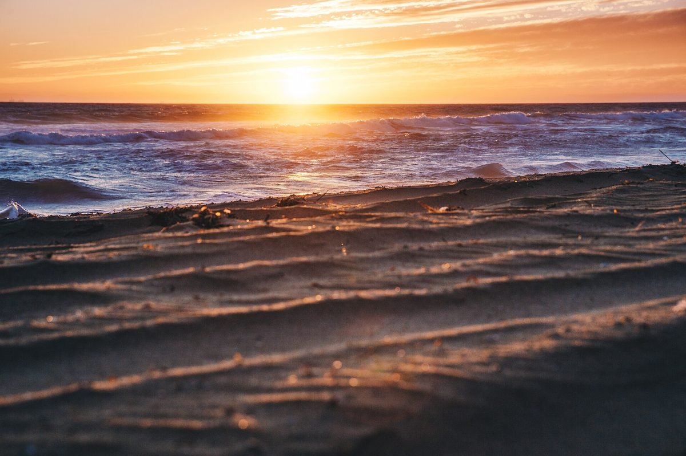
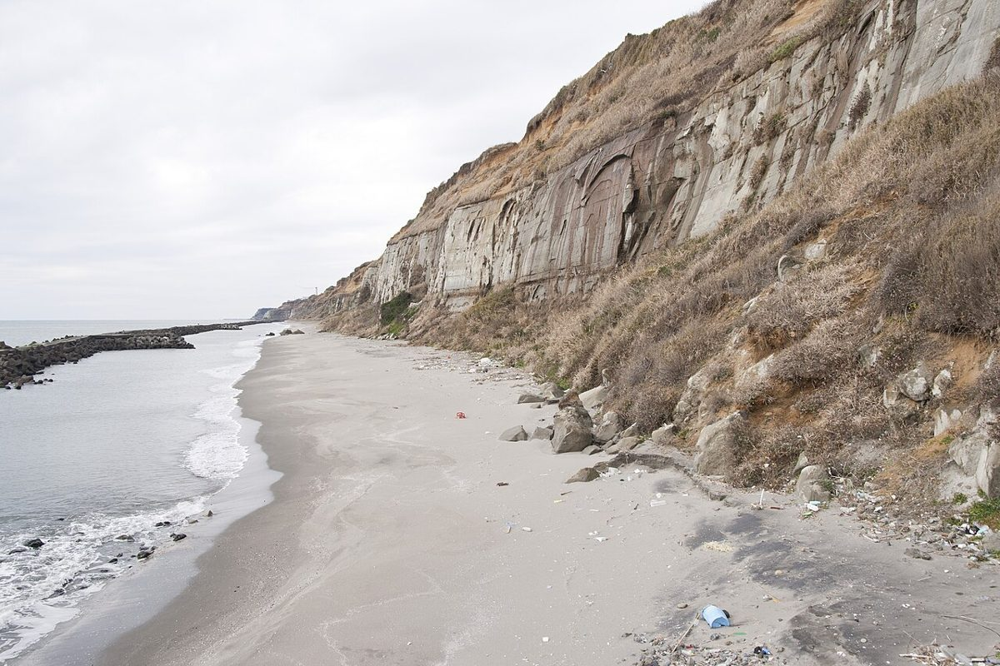
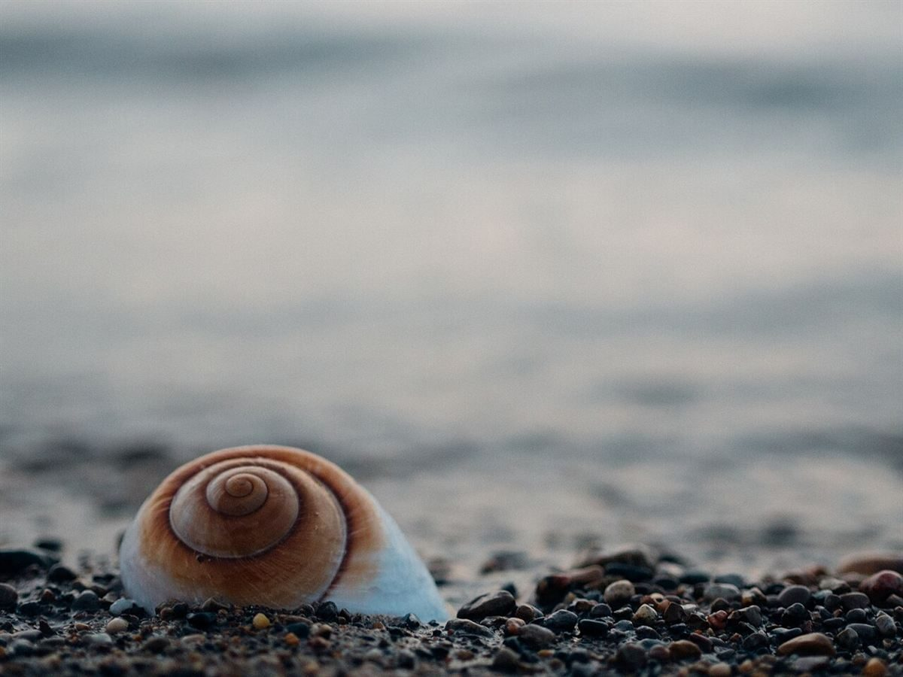
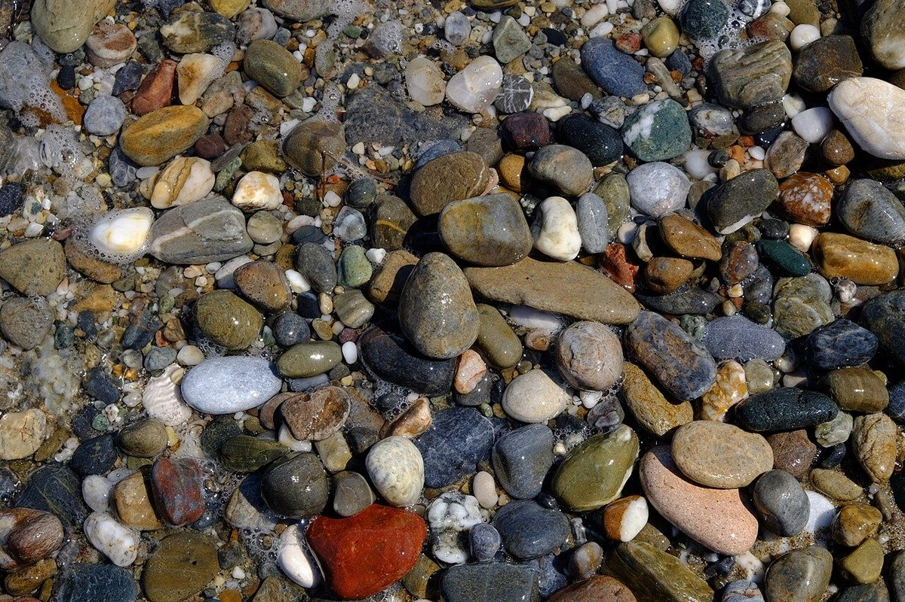

お店の基本情報
- 住所
- 千葉県山武市白幡2295-69
- @motosuka_surfsidecoffee
- 営業時間
- 準備中(お問い合わせください)
- 定休日
- 準備中(お問い合わせください)




制作側の案
ふらりと寄る前の、小さな案内板
このページは「行ってみたい」と思った人が、場所・連絡先・Instagramをすぐ見つけられることを一番に考えた見本です。お店の考えや由来については、こちらでは決めつけず、ご本人からお聞きしてから載せたいと考えています。
メニューや営業時間などの詳しい内容は準備中(お問い合わせください)。Instagramの最新情報とあわせてご覧いただける形にできます。